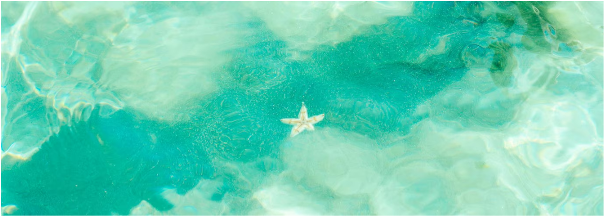

Atlanta
Just Do It!
Calendar
TO-DO list
Notes
Focus Session
Link
Launch Pad
Vision:
Dark academia
Journal
First day of college.
Highlights of the day:
Worked on a cool website design.
Had my fav pani puri.
Got full marks in fog test
Practising journalling daily!!!